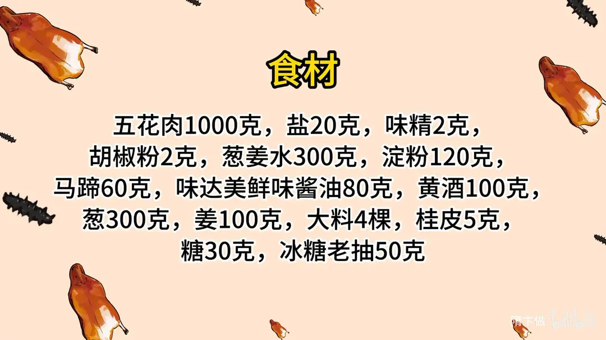
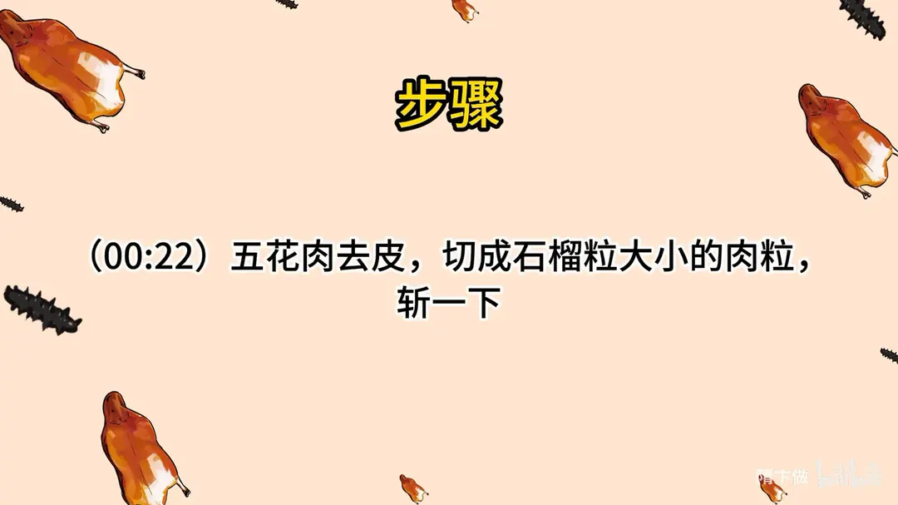
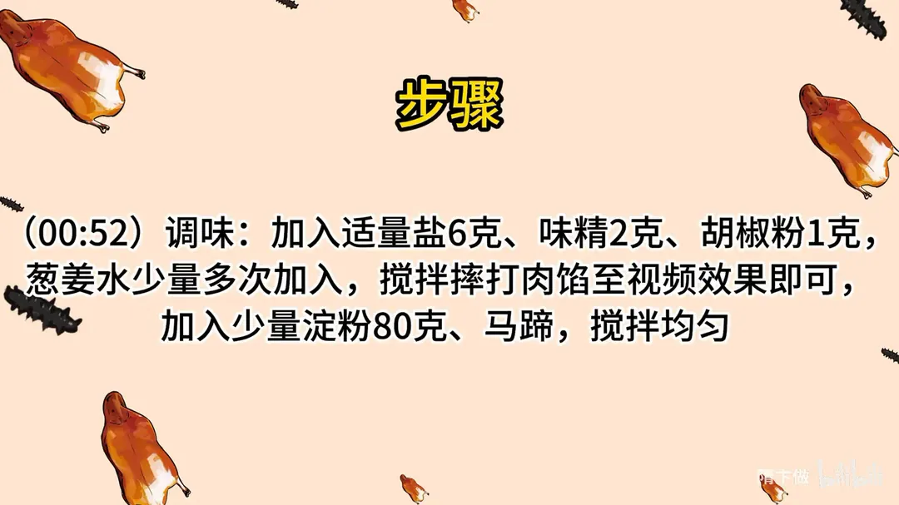
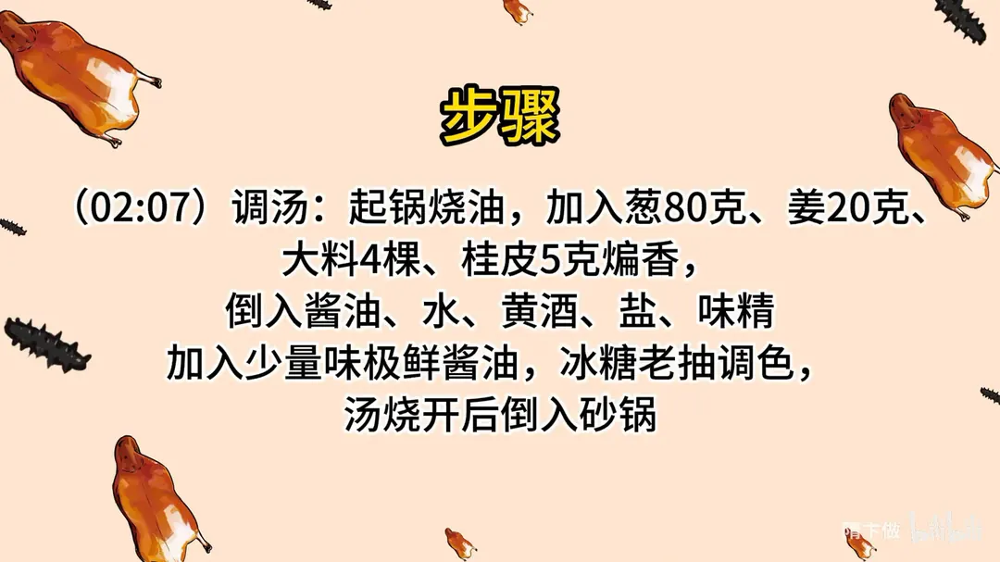
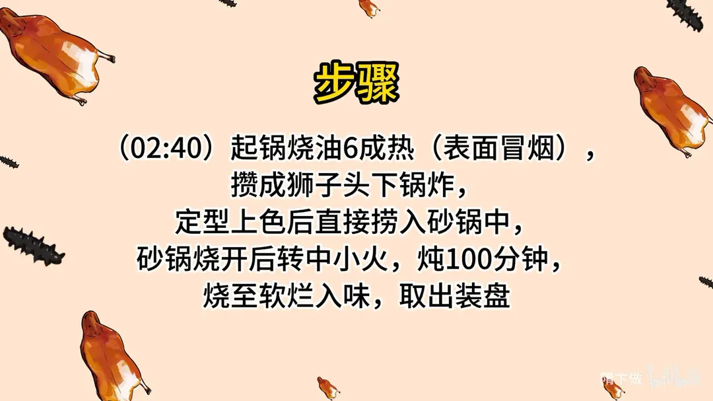
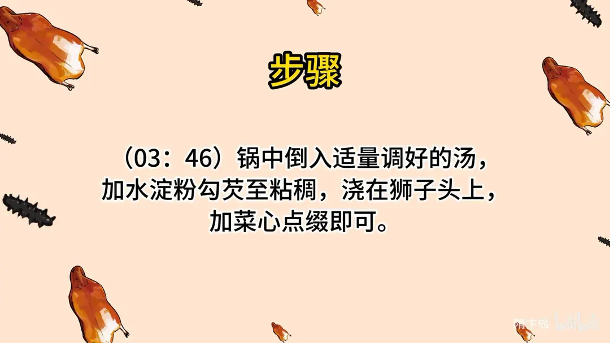

红烧狮子头
隋卞一做。五花肉 1000g 去皮切石榴粒大小，斩几下后加盐、味精、胡椒粉，分次打入 300g 葱姜水摔打上劲，再拌 120g 淀粉、60g 马蹄。六成油温炸定型，砂锅中小火炖 100 分钟，原汤勾芡浇上。
原视频：https://www.bilibili.com/video/BV1hp4y1T7dU
食材
五花肉、盐、葱姜水 等 15 样
| 类别 | 用料 | 用量 |
|---|---|---|
| 主料 | 五花肉 | 1000g |
| 馅料调味 | 盐 | 20g |
| 馅料调味 | 味精 | 2g |
| 馅料调味 | 胡椒粉 | 2g |
| 打水 | 葱姜水 | 300g |
| 粉料 | 淀粉 | 120g |
| 配料 | 马蹄 | 60g |
| 调料 | 味达美鲜味酱油 | 80g |
| 调料 | 黄酒 | 100g |
| 调料 | 葱 | 300g |
| 调料 | 姜 | 100g |
| 香料 | 大料 | 4 棵 |
| 香料 | 桂皮 | 5g |
| 调料 | 糖 | 30g |
| 调料 | 冰糖老抽 | 50g |
步骤
- 切肉：五花肉去皮，切成石榴粒大小的肉粒，再斩一下。
- 调味：加入适量盐 6g、味精 2g、胡椒粉 1g。
- 打水上劲：葱姜水少量多次加入，搅拌摔打肉馅至黏稠起胶。
- 拌淀粉马蹄：加入少量淀粉 80g、马蹄，搅拌均匀。
- 调汤：起锅烧油，加入葱 80g、姜 20g、大料 4 棵、桂皮 5g 煸香，倒入酱油、水、黄酒、盐、味精，加入少量味极鲜酱油，用冰糖老抽调色，汤烧开后倒入砂锅。
- 炸丸子：另起锅烧油至六成热（表面冒烟），把肉馅攒成狮子头下锅炸。
- 炖制：定型上色后直接捞入砂锅，砂锅烧开后转中小火炖 100 分钟，烧至软烂入味，取出装盘。
- 勾芡装盘：锅中倒入适量调好的汤，加水淀粉勾芡至粘稠，浇在狮子头上，加菜心点缀即可。
小贴士
- 肉切石榴粒大小后只斩几下，保留颗粒感，吃着才有狮子头的松软口感。
- 葱姜水要少量多次加，边加边摔打，肉馅才抱团不散。
- 食材表里的盐、淀粉是总量，调馅先用 6g 盐、80g 淀粉，余量留给调汤和调整。
- 砂锅必须烧开后再转中小火，全程保持微沸，炖 100 分钟才软烂不散。
讲解要点
难度：★★★☆☆（切粒粗斩、打水轻重、100 分钟火候，三步都不能省）
为什么这么做
- 用硬五花、切粒后只粗斩几下：细切粗斩，瘦肉粒和肥肉粒还独立存在，炖完中间仍有颗粒感、有肉香；绞肉或斩成泥就成了普通丸子，狮子头的质感全没了。
- 不打上劲：狮子头要的是松软，不是弹性。打到起胶变弹，反而失去「入口即化又不失其形」的口感。
- 葱姜水少量多次加：一斤肉配三两水，分次打进去肉馅才吃得下；一次倒太多吸收不了，团的时候就会散。
- 团丸子用淀粉水：淀粉水把表面糊住，手不粘、球能团圆，炸完表面也不会麻麻赖赖。
- 六成油温只炸定型：高温让外层蛋白迅速凝固成壳，丸子不塌、不吸油；这一步不炸熟，炸久了里面就柴了。
- 汤烧开后再下丸子、砂锅中小火 100 分钟：汤滚时下锅表面立刻定型不散；全程微沸才炖得软烂不破。
- 最后水淀粉勾薄芡：红烧汁挂得住，颜色亮，味道才附在丸子上而不是留在盘底。
容易翻车
- 图省事用绞肉，出来是肉丸不是狮子头。
- 打水打过头，肉馅起胶，炖完硬邦邦。
- 油温不够，丸子下锅就散；油温过高，外壳焦了里面还是生的。
- 砂锅火太大，汤翻滚把丸子冲散。
- 炖不到 100 分钟，中心腻、带腥味、不入味。
热评补充
- 有网友用绞肉代替手切，调味照样好吃，但口感明显不如手切的颗粒感；「100 分钟就是 100 分钟的道理」，炖短了就是外头吃到的那种油腻、中心腥又不入味的口感。
- 团丸子别用手粉干淀粉，要用淀粉水，否则炸出来表面凹凸不平。
原片尾卡






原片文案
AI 字幕校准稿
今天给大家做一个传统国名菜——红烧狮子头。精选五花肉，要用硬五花，皮去掉。先把这五花肉切成片，然后再切粒，就十六粒大小，然后稍微给它斩一下。这叫细切粗斩，就是为了让它肉丸粘在一块。
有人说红烧四喜丸子跟淮扬菜狮子头是一样的，其实是两个东西，唯一像的地方可能就是都是圆的。四喜丸子那一锅要加葱姜末，可能还要加五香粉、碎馒头，咱们这里边其他的就不放那么多。
我这边调味变得更细——酱油、盐、味精、胡椒粉，比例给放到片尾。调完之后要加葱姜水，增加肉的含水量，炖完之后吃得更软嫩一些。水一定是少量多次加。
这个不像打那种丸子馅儿，包括那叫什么三点肉丸，必须得打上劲才能有很大的弹性，这个是不需要的。转着圈地甩这个肉馅，手里倒腾几下，团一个很圆的球。它会慢慢往下塌，但是不会弹得那么好，打到这种程度说明你的劲是对的。
好了，抓点淀粉，把切好的马蹄放进去。我们开始做，先调料：汤锅里放点油，把那个葱姜、大料、桂皮给它煸香，放入味达美的鲜味酱油，然后加入水，加入黄酒，加入盐、味精、胡椒粉、白糖，用味达美冰糖老抽调一下颜色。这汤烧开之后，咱们把它倒砂锅里边。
把油烧到六成热，油面表面冒点烟了，丸子下锅。这一步的主要目的就是外层定型，红烧必炸。定型的颜色够了就直接捞，这一步不会炸熟，只是为了定型。直接捞到这个汤锅里边，砂锅烧开之后就要转中小火，也得照着 100 分钟来炖。
好了，我们这个到时间了，打开看一眼，汤往下耗了一部分是正确的。这个拿筷子还是弄不起来的，真的体现出来叫软烂而不失其形，中间的肉还有颗粒感。
水淀粉勾芡，就是黏糊的就行了。打好的汁浇上面，亮的、糊的，挂上就行了。
真的太好，肥肉吃着很有颗粒感，很软很烂，里面又有肉的香，还有马蹄一丝丝的甜，然后外面那个红烧汁咸香，特别的合适，丝毫没有把肉的味道抢掉。这个狮子头做法你看也很简单，不就是切成粒稍微麻烦一点；狮子头一定要算是里面是颗粒的，吃肉的那个感觉特别的爽，跟外面的丸子真的完全不一样。